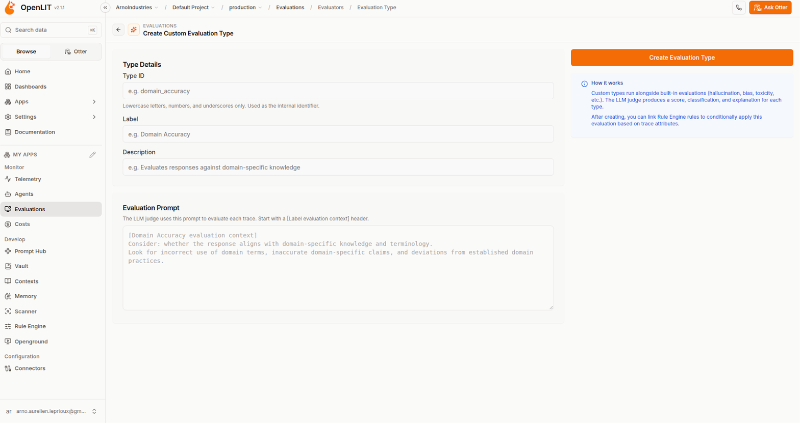

Source: Subyard READMEReference environment for this work
03 / harnesses · available data
What each harness records and exports.
Our comparison categories, not vendor-defined levels. Metrics, events and traces are all telemetry.
Collection method
Codex CLI
Claude Code
OpenCode
01 / LOCALSaved by defaultRead after a session
Messages, tool calls/results, timestamps and token usage.
Input, cached input, output and reasoning counts in local rollouts.
~/.codex/ · local session files
Messages, tool calls/results and token/cost statistics.
JSONL transcripts, including subagents. Configurable cleanup; default 30 days.
~/.claude/ · transcripts + stats
Sessions, messages, tool inputs/results, tokens and cost.
Usage fields include input/output, cache read/write and reasoning.*
~/.local/share/opencode/
02 / EXPORTMetrics & eventsConfigure collection
Token counts; API/tool durations, outcomes and approvals.
Configure OTel log and metric exporters plus the collector endpoint.
otel.exporter · otel.metrics_exporter
Tokens/cache, cost, active time, API calls and tool events.
Enable telemetry; select metric/log exporters and the collector endpoint.
CLAUDE_CODE_ENABLE_TELEMETRY=1
JSON session export and token/cost summaries.
Live collection needs an SDK/plugin adapter. Native OTLP metrics/logs are not documented.
opencode export · opencode stats
03 / TRACINGTimed spansOptional telemetry: what ran, for how long
Native OTLP trace exporter.
Enable separately and set the destination. Actual span coverage needs a real-run check.
otel.trace_exporter
Interaction → API / tool spans Beta
Includes nested subagent calls. Enable enhanced telemetry and a trace exporter.
Beta flag + trace exporter
Native trace export: unverified.
Plan an SDK/plugin tracing adapter; validate span timing and parent/child links.
Custom instrumentation to evaluate
Our integration workNormalize these records; correlate task → agent → step; add process CPU/RAM measurements.
OTel = OpenTelemetry; OTLP = its export protocol. Local records and collector exports are separate. *OpenCode usage fields checked in development source; verify the installed version. Provider analytics have separate defaults.
Official AI Observer example · the image underlying the supplied annotated slide
1
Explore the data
Metrics, Logs and Traces in the sidebar.
2
Start with the overview
Trace count, log records, metric points and error rate.
3
Read service metrics
Claude Code active time, cost and lines of code.
4
See usage over time
Token charts for Claude Code, Gemini CLI and Codex CLI.
5
Choose the view
Timeframe and dashboard editing controls.
Source: official AI Observer dashboard image, reused from presentation 2Example data · last 1 hour
05 / AI Observer · supplied Default Dashboard
AI Observer Default Dashboard.
Metrics and logs are present; no traces are shown. With zero spans, the displayed error rate does not establish error-free operation.
Source: user-supplied original screenshotCaptured view · last 1 hour
06 / AI Observer · Metrics selector
AI Observer Metrics.
Available metric choices in the captured menu. No metric is selected and no series is plotted.
Source: user-supplied original screenshotCaptured view · last 15 minutes
07 / MLflow · trace explorer
MLflow Trace explorer.
Span hierarchy and timings on the left; selected LLM call attributes on the right.
Source: user-supplied original screenshotMLflow 3.17.0 · captured trace view
08 / OpenLIT · custom evaluations
OpenLIT Custom evals.

Define an evaluation type and its judge prompt. The on-screen guidance describes scores, classifications and explanations, with rules based on trace attributes.
Source: user-supplied original screenshotOpenLIT v2.1.1 · evaluation setup